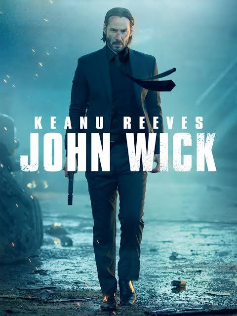

I wanted to review the first John Wick movie because it is one of the first movies I ever enjoyed. I have never enjoyed watching a movie more for its action and story than the first John Wick movie, and I have enjoyed the other movies in the collection as well. Starting with the first few minutes showing the ending to captivate the viewer and then proceeds to show his progress that led to that point. I also love the fact that when we get to the rise of action, it is shown that the reason for his vengeance and joining back into the world of assassins is because they took him out of his normal life by taking away one of his cherished dogs. His wife died of an illness, and his final gift to him was a dog, which was very short-lived because the dog was killed; this then started his grievance and thirst for revenge because of the mistake of the son of the leader of the Tarasov Mob. All the action and the film leading to the final few scenes that were shown at the start of the film show how John Wick came back with vengeance and left again to try to lead a new life.